Summary
Navigation tools rank walking routes by distance and time, although pedestrians in central Singapore are often exposed to direct sun between Mass Rapid Transit (MRT) stations and attractions. ShadeWalk is a web prototype that suggests destinations from public Instagram activity and compares, for the same stops, a shortest route with routes favouring covered linkways, estimated shade or popular streets. Artificial intelligence (AI) is limited to tasks that rules handle poorly: a large language model (LLM) interprets untagged captions, and street-view images are analysed by combining quantitative segmentation with the Segment Anything Model (SAM) and shade evaluation with a vision-language model (VLM); routing is deterministic. Across 300 test itineraries at 13:00, the shade route gained a median 16.0 percentage points of estimated shade for 202 m of extra walking. Covered linkways alone recovered about 78% of this gain, and the VLM and 3D shade layers agreed only weakly, which supports a layered design subject to field validation.
Keywords: pedestrian thermal comfort; shade-aware routing; street-view imagery; vision-language models; social media
1 Problem Statement
1.1 Heat exposure and pedestrian route choice
Singapore is already thermally demanding for walking, and extreme heat is projected to become more frequent. Days with a maximum above 35 °C, about 21 per year over the past four decades, are projected to number 41–125 per year by the end of the century under a low-emissions pathway and 252–351 under a high-emissions pathway (MSS & MSE, 2024; Figure 1).
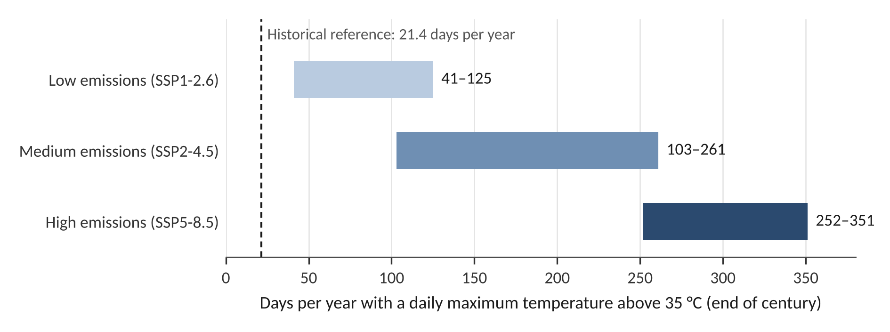
Pedestrians adapt through route choice. In a Singapore experiment, participants accepted longer paths to avoid the sun and valued 100 m in sunlight approximately as 116 m in shade (Melnikov et al., 2022); similar trade-offs occur in other dense subtropical cities (Ma et al., 2025). For leisure walking, a moderately longer route may therefore be preferable if it is shaded and passes places of interest.
1.2 Gaps in current tools and data
Navigation services omit two types of information. The first is which places currently attract attention: inventories of points of interest (POIs) locate attractions, whereas location-based social media reveal where visitor attention concentrates (Liu et al., 2022). The second is where the walk is shaded. Canopy maps viewed from above omit awnings, overhangs and covered walkways and say little about continuity along a trip (Zhao et al., 2026). Street-view imagery (SVI) records the street at eye level and has been used to quantify street-tree shade, including in Singapore, and streetscape composition (Richards & Edwards, 2017; Li et al., 2018; Middel et al., 2019; Biljecki & Ito, 2021), and has been coupled with routing to reduce sunlight exposure (Li et al., 2022). Although tourist trip design is well studied (Gavalas et al., 2014), the two forms of evidence are rarely combined in one walking tool for public-transport users.
1.3 Intended users and research questions
The primary users are visitors and residents who walk from an MRT station with limited time, such as a visitor arriving at City Hall at 13:00 with an hour to spare; Singapore received about 16.9 million international visitors in 2025 (STB, 2026). Planners are a secondary audience, because the same layers reveal popular streets that lack shade, in line with the Walk-Cycle-Ride objective of the Land Transport Master Plan 2040 (LTA, 2019). The evaluation addresses three questions. RQ1: how much estimated shade can a walker gain through the same stops, and at what distance cost? RQ2: how much of that gain can non-AI baselines (covered linkways, a 3D shadow model) recover? RQ3: where does AI add information beyond these baselines?
2 Proposed Solution
2.1 Approach
ShadeWalk separates two decisions (Figure 2): social media evidence determines where to stop, and estimated shade determines how to walk between stops. First, the simplest adequate method was used at each step, and AI was applied only to unstructured input, namely captions without a usable location tag and street-view images requiring a shade judgement; collection, spatial joins, gap filling and routing use geographic information systems (GIS) and fixed rules. Second, all routes share one network and one cost function, so differences between routes through the same stops can be attributed to the layer that guided them.
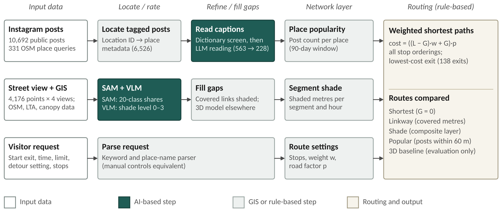
2.2 Study area and data
The study area covers seven Central Area planning zones (12.60 km²) with 10 MRT stations and 54 exits (Figure 3). The pedestrian network from OpenStreetMap (OSM; Haklay & Weber, 2008), downloaded on 4 November 2026, contains 12,179 segments totalling 467.4 km. Covered linkways and pedestrian bridges come from LTA DataMall, and station exits and attractions from data.gov.sg. OSM buildings, the Meta/WRI 1 m canopy height map (Tolan et al., 2024) and ESA WorldCover 2021 (Zanaga et al., 2022) parameterise a 3D shadow model for 09:00, 13:00 and 17:00. Instagram posts were collected through Apify (snapshot of 4 November 2026). Distances were computed in SVY21 (EPSG:3414); Appendix B lists sources and licences.
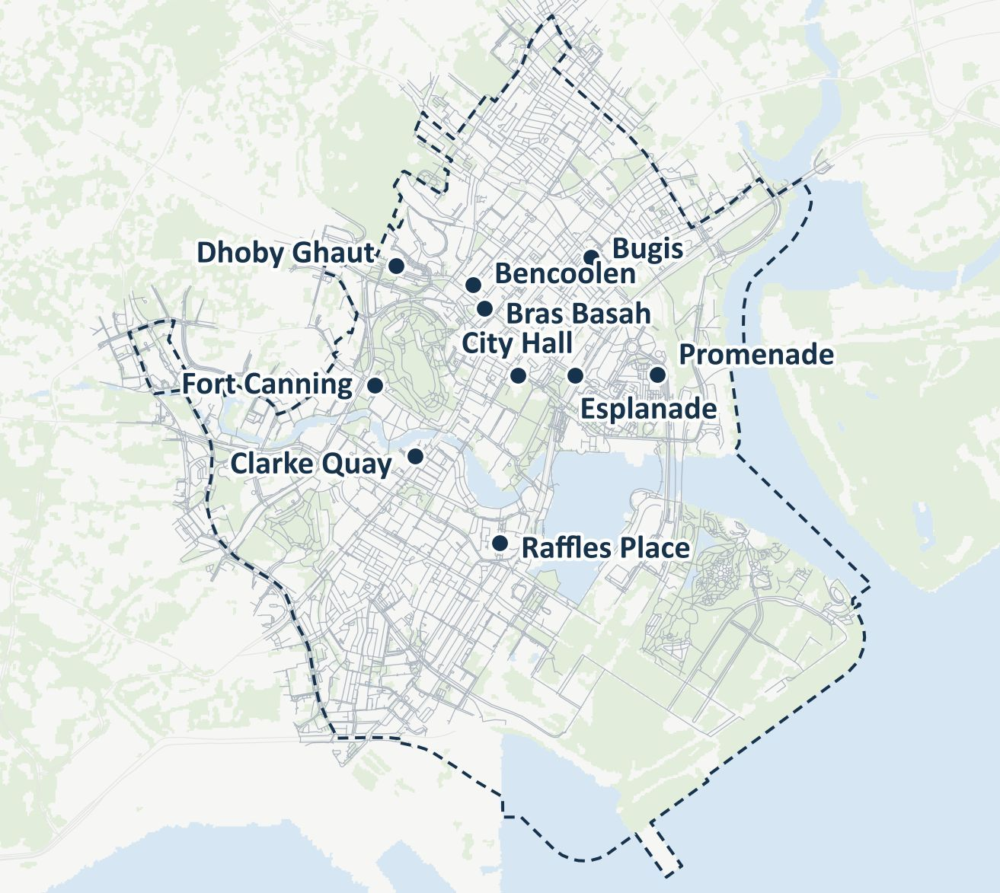
3 AI Methodology
Table 1 lists each processing step, whether it uses AI and the baseline against which it is assessed. Models and instructions are documented in Appendix C.
| Step | Method | AI or rules | Output | Non-AI baseline |
|---|---|---|---|---|
| Locate tagged posts | Location ID to place metadata | Rules | Point at tagged place | – |
| Locate untagged posts | Dictionary screening, then contextual reading | Rules, then LLM | Place link, confidence, post role | Dictionary alone |
| Quantify street scene | Prompt-based SAM segmentation | AI (SAM) | Pixel shares of 20 classes | – |
| Evaluate street shade | VLM on four views, checked against SAM shares | AI (VLM) | Shade level 0–3 per point | 3D model; linkways |
| Fill shade gaps | Building and canopy shadow model | Rules | Shaded share per segment and hour | – |
| Route | Weighted shortest paths, all stop orders | Rules | Four routes and a baseline | Shortest route |
3.1 Destination popularity from social media
The 331 named OSM places in the study area supplied names and hashtags for Instagram searches through Apify, yielding 10,692 unique posts (Figure 4a). Location tags resolved most cases: 6,526 posts carried a tag with coordinates, of which 4,320 fell inside the study area; 894 were tagged outside it and 1,312 only to a city or country. The remaining 4,166 posts had no usable coordinates. A dictionary of place names and aliases first screened their captions: 2,508 named no listed place and 239 named several, while 559 named one place together with a locative cue and, with four test cases, formed 563 candidates. An LLM then read each candidate in context and recorded whether the post referred to the place, a confidence level, the post's role (e.g. personal visit, promotion, event report) and the supporting text. It accepted 490 links and rejected 73; only the 228 high-confidence personal or scene posts entered the popularity layer. Coordinates always come from the existing OSM point, so the model links posts to places but never generates locations (Figure 4b).
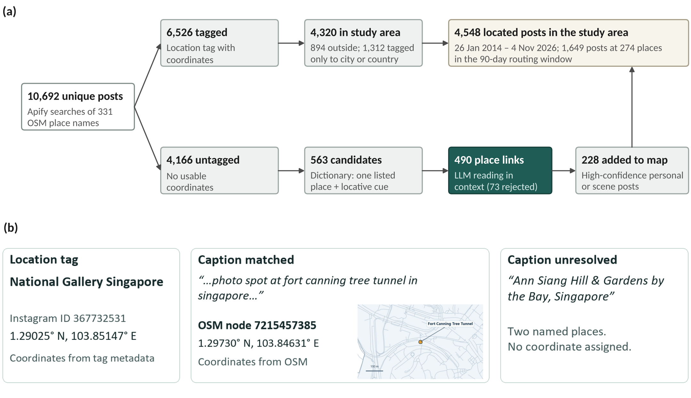
An LLM was used because a dictionary detects names but cannot distinguish a visit from an advertisement or a passing mention; pre-screening keeps the AI task small enough to audit. The procedure yielded 4,548 located posts (Table 2). Route suggestions use a fixed 90-day window (6 August to 3 November 2026) with 1,649 posts at 274 places (Figure E1), and popularity is the post count for that period.
| Period | Tagged | Caption matched | Total |
|---|---|---|---|
| All dates (26 Jan 2014 – 4 Nov 2026) | 4,320 | 228 | 4,548 |
| 90-day routing window | 1,518 | 131 | 1,649 |
3.2 Street-level shade from SAM segmentation and VLM evaluation
Shade was assessed from the pedestrian's viewpoint by combining quantitative SAM segmentation of scene elements with a VLM evaluation of shade on the walking line. Sampling points were placed about every 40 m along the network (4,176 points), and four images (forward, backward, left, right) were requested per point; 15,019 of 16,704 (90%) were valid, and 77% of valid images date from 2024 or later.
Quantitative segmentation (SAM). A prompt-based segmentation model built on SAM (Kirillov et al., 2023) delineated 20 text-prompted classes in each valid image, including tree, shrub, grass, shelter, umbrella, canopy, shadow, sky, building and flyover (Figure 5a). Pixel shares were aggregated by point to give quantitative indicators of the shading elements in view; on average, greenery occupied 22.5% of image pixels, buildings 15.6% and canopy 1.0% (Figure E2). Segmentation measures what is visible, but not whether it shades the footpath: a tree-lined carriageway and a roofed walkway can yield similar shares.
Shade evaluation (VLM). A VLM therefore evaluated each image for shade on the walking line, considering overhead cover, vegetation and side openness, and assigned one of four levels (none, low, medium, high; Figure 6), coded 0–3 and averaged over valid images. The 240 points without a valid image were left unscored, so 3,936 points received a score, 3,915 of them inside the study boundary (mean 1.38; Figure 7).
Integration. The two outputs are combined at each point: the VLM level supplies the shade fraction used for routing, and the SAM shares provide the quantitative evidence against which that judgement is checked. Across points, the VLM level decreased with visible sky (Spearman ρ = −0.51) and increased with tree (0.17), canopy (0.12) and shelter (0.09) shares, whereas building (0.05), umbrella (0.01) and shadow (−0.01) shares were nearly unrelated (Figure 5b). The VLM therefore responds mainly to overhead enclosure as measured by segmentation, and points where the two disagree are candidates for manual review.
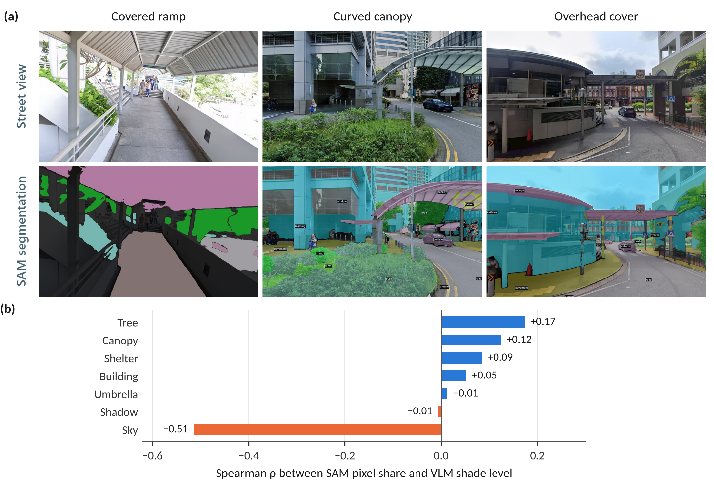
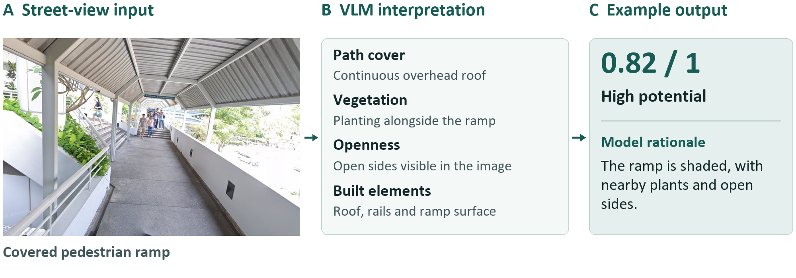
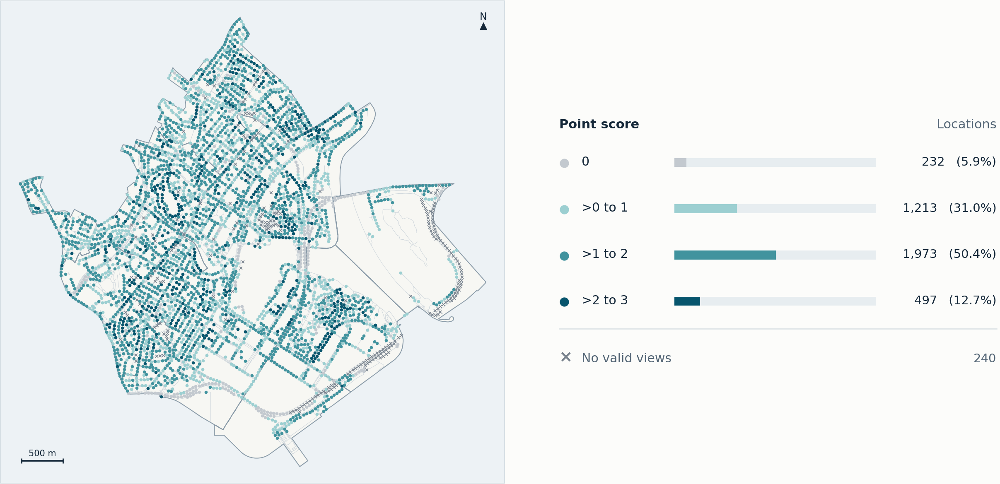
Point scores were transferred to the network by assigning each 5 m piece of a segment the nearest scored point within 20 m, excluding indoor and tunnel segments. The 3,844 matched points cover 250.9 km (53.7%) of network length. Elsewhere, the 3D model share at the selected hour is used, and covered paths count as fully shaded because a vehicle-mounted camera cannot see beneath linkways. The shaded length of a segment is
Gshade = C + (L − C) × f
where L is length, C is covered length and f is the VLM level divided by 3 on image-supported portions and the 3D model share elsewhere. Neither model suffices alone: pixel counts cannot establish whether an element shades the footpath, whereas VLM judgements of urban qualities are imperfect and opaque (Mushkani, 2025); pairing them follows recent work on the visual assessment of thermal affordance (Yang et al., 2025).
3.3 Rule-based routing
Each segment carries a length L and preferred metres G that depend on the mode (Table 3). Its cost in weighted metres is
cost = ((L − G) × w + G) × p
where w is 1.5, 2.5 or 4 for the Shorter, Balanced and Detours OK settings and p is 1.5 on primary roads, 1.2 on service roads and 1 elsewhere. At Balanced, 100 m without preferred metres therefore costs as much as 250 m of fully preferred walking. Paths are found with a heap-based shortest-path algorithm (Dijkstra, 1959).
| Mode | Preferred metres G | Role |
|---|---|---|
| Shortest | G = 0 (unweighted distance) | Reference |
| Linkway | Covered metres from LTA and OSM | Non-AI baseline |
| Shade | Gshade (cover, VLM shade, 3D shade in gaps) | Proposed |
| Popular | Length weighted by log(1 + posts) / log(1 + P98) within 60 m, capped at 1 | Alternative |
| 3D baseline | Covered metres plus 3D-modelled shade | Non-AI baseline |
Users select up to six stops or request suggestions, which add places by descending post count, at least 200 m apart, until three are chosen or the walking limit (75 m per minute) would be exceeded. All stop orderings are evaluated, and the route ends at the lowest-cost exit among 138 exits of 27 stations. Stop selection is greedy; path computation is exact and reproducible.
4 Prototype and Demonstration
4.1 Interface
The prototype runs in a web browser at the live demo, in Chinese or English (Figure 8a). Users choose a start exit, departure time (09:00, 13:00 or 17:00), walking limit (30, 60 or 90 minutes) and detour setting, then search for stops, pick them on the map or request suggestions. The Route view lists four routes with time, distance, estimated shade, longest exposed run and nearby posts on a 3D map; map styles show street shade or post density, and a Compare view adds the 3D baseline.
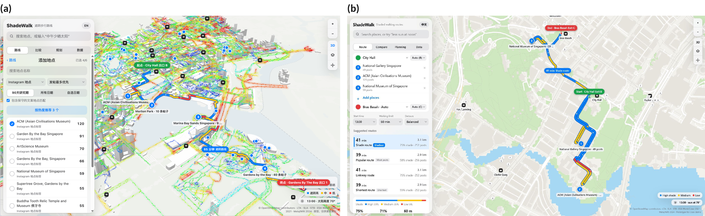
4.2 Worked example
In the opening view, a visitor starts at City Hall Exit B at 13:00 with a 60-minute limit and the Balanced setting, visiting the National Gallery Singapore (49 posts in the 90-day window), the Asian Civilisations Museum (120) and the National Museum of Singapore (59) (Figure 8b; Table 4).
| Route | Distance (km) | Time (min) | Est. shade (%) | Longest exposed run (m) | SVI coverage (%) |
|---|---|---|---|---|---|
| Shortest | 2.91 | 39 | 55.4 | 80 | 73.6 |
| Popular | 2.92 | 39 | 58.0 | 92 | 76.1 |
| Linkway | 3.09 | 41 | 75.1 | 61 | 71.0 |
| 3D baseline | 3.10 | 41 | 75.4 | 61 | 71.0 |
| Shade | 3.09 | 41 | 75.4 | 61 | 71.3 |
For about 180 m and two minutes of extra walking, the Shade route raised estimated shade by 20 percentage points and shortened the longest exposure from 80 m to 61 m. The Linkway, 3D baseline and Shade routes nearly coincide, indicating that the Civic District's linkway network already provides most of the benefit.
5 Critical Evaluation
5.1 Evaluation design
Because a single case cannot characterise route behaviour, 300 itineraries were generated with the prototype's own routing function (Appendix D). Each starts at a random study-area station and visits three of the 60 most-posted locations at least 200 m apart, and was retained only if its shortest route fitted within 60 minutes (fixed seed; 300 retained from 1,958 draws). Routes use 13:00 and the Balanced setting unless stated. All routes are scored with the same composite shade measure, and gains are reported in percentage points (pp) relative to the Shortest route as medians with interquartile ranges (IQR).
5.2 Results
The median Shortest route was 3.96 km and 53 minutes long, with 50.9% estimated shade. The Shade route added 202 m (5.2% of route length) and gained 16.0 pp (Table 5; Figure 9a). The Linkway route gained 12.4 pp for 224 m, the 3D baseline 16.1 pp for 324 m, and the Popular route only 1.3 pp. Itineraries with a continuous exposed run of at least 100 m fell from 269 to 168, and the median longest exposed run from 200 m to 124 m. The detour setting showed diminishing returns, with Detours OK adding 120 m beyond Balanced for 2.8 pp (Figure 9b). Because the walking limit is applied before the shade detour, 66 Shade routes (22%) exceeded 60 minutes.
| Route and setting | Additional distance (m) | Shade gain (pp) |
|---|---|---|
| Popular, Balanced | 42 [17–77] | 1.3 [0.0–4.3] |
| Linkway, Balanced | 224 [101–332] | 12.4 [7.6–17.8] |
| 3D baseline, Balanced | 324 [211–451] | 16.1 [10.9–20.4] |
| Shade, Shorter (w = 1.5) | 60 [27–100] | 9.1 [4.4–14.2] |
| Shade, Balanced (w = 2.5) | 202 [112–312] | 16.0 [10.7–20.1] |
| Shade, Detours OK (w = 4) | 322 [198–473] | 18.8 [13.4–22.2] |
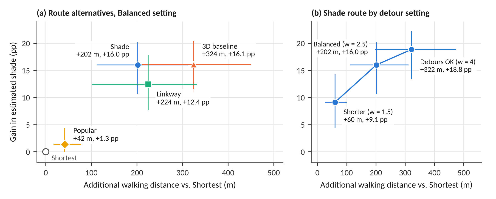
The two shade layers guide walkers along different streets: Shade and 3D-baseline routes shared a median 57% of their length. Because street-view images carry no time of day, Shade routes retained 59% and 76% of the 13:00 path at 09:00 and 17:00, against 40% and 37% for 3D-baseline routes. Each route also scored best on its own layer; measured with the 3D model alone, the 3D baseline gained 27.2 pp and the Shade route 19.2 pp. Reported gains therefore partly reflect the internal consistency of each layer rather than observed shade.
5.3 Contribution of AI relative to non-AI baselines
For shade, covered linkways alone delivered about 78% of the Shade route's gain (12.4 of 16.0 pp), and the 3D model alone matched the gain with a longer detour (RQ2). The VLM layer and the 3D model agreed only weakly (Spearman ρ = 0.21 over 264.2 km of comparable segments at 13:00); 16.6 km were rated high by the VLM but low by the model, and 6.9 km the reverse (Figure 10). The VLM observes the street from pedestrian height and can register awnings and overhangs absent from building and canopy models, whereas the 3D model captures the diurnal path of the sun. This supports a layered design: linkways as the base, the 3D model for time of day and the SAM–VLM layer for street-level features (RQ3).
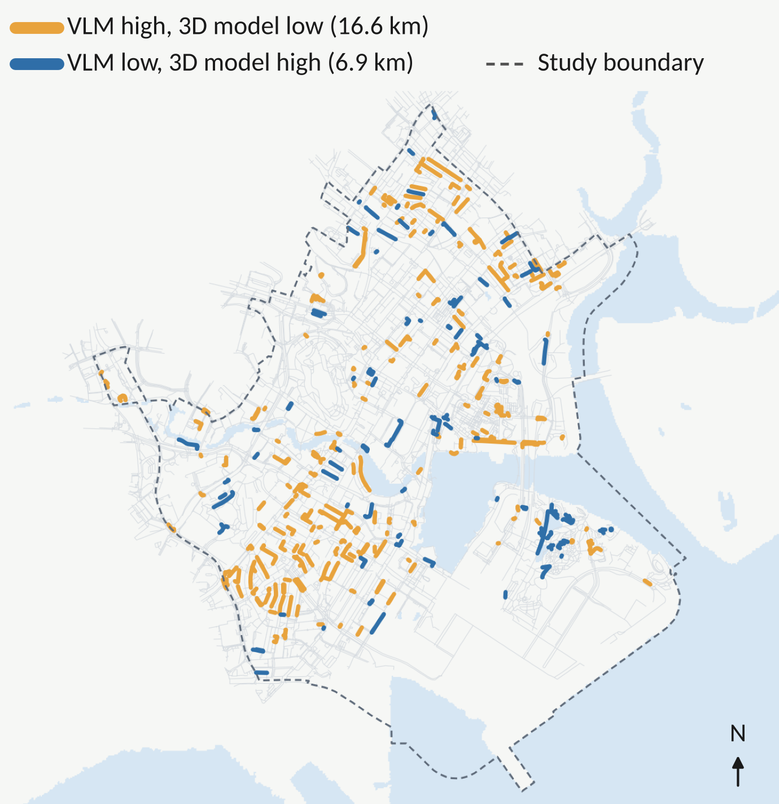
For social media, LLM reading contributed 228 of 4,548 located posts (5%). Its value lay in filtering rather than retrieval, since the dictionary had found all 563 candidates: dictionary screening alone would have mapped 73 captions unrelated to the named place and 157 promotional posts among the 490 accepted links.
5.4 Limitations
Validity. No field or manual validation was conducted, so results describe behaviour under estimated rather than observed shade. SAM masks and VLM ratings were not checked against manual labels and depend on camera position, capture date and path visibility; capture times are unknown; and the rating tracks open sky, which is related to but not equivalent to footpath shade. Street-view ratings cover 53.7% of network length. The ordinal-to-fraction conversion and detour weights are uncalibrated; the Balanced setting values 100 m of exposure as 250 m of shade, far stronger than the empirical ratio of about 1.16 (Melnikov et al., 2022), so settings should be read as scenarios rather than preference estimates.
Representativeness. Query terms and posting habits shape the Instagram sample; post counts over-represent landmarks (Song et al., 2020), posting dates are not visit dates, and tagged posts were not screened for advertising as caption posts were.
Design and governance. Stops are chosen by post count before paths are computed, so shade does not affect which places are suggested, and entrances, opening hours, stairs and crossings are not modelled. Benchmark stops are random draws rather than observed itineraries. Data terms differ by source; LTA DataMall data are for non-commercial use, so only processed layers and anonymised counts are published.
5.5 Potential improvements
Field validation should come first, sampling the discrepancies in Figure 10 and recording shade and exposed-run lengths at selected hours, together with human review of a sample of LLM caption decisions. Independent labels would allow the ordinal-to-fraction conversion to be calibrated and the incremental value of the VLM to be tested. Routing could then re-check the time limit after the detour, include shade in stop selection and fuse the VLM rating with the 3D model's time dependence. An LLM could map free-text requests to the existing settings while routing remains rule-based, and open imagery such as Global Streetscapes (Hou et al., 2024) would ease publication and updating. A planning view follows directly: at 13:00, 1.5 km of the 11.0 km of streets with the most nearby posts had estimated shade below 33%.
6 Project Repository
The materials are publicly available to support inspection and reproduction (Table 6); this report documents commit fb26aff (17 November 2026).
| Resource | Link | Contents |
|---|---|---|
| Report | report.html | Web version of this report |
| Live demo | shadewalk-sg | Interactive prototype (GitHub Pages) |
| Repository | ZhangYihan-1021/shadewalk-sg | Code, processed data, figures |
| Evaluation | evaluation/ | Benchmark script, results, itinerary table |
| Routing engine | routing-engine.js | Edge cost and shortest-path search |
The prototype is a static web application; files/ holds the routing engine, interface and processed data (segment shade levels, station exits, anonymised daily post counts) from which every route in the live demo is computed. Section 5 is reproduced by running evaluation/route_evaluation_console.js in the browser console of the live demo and comparing the output with route_evaluation_results.json. Captions, usernames, raw LTA and Instagram exports, street-view images and preparation scripts are retained by the group for licensing and privacy reasons; reproducing the AI outputs requires the model details in Appendix C.
Appendices
The appendices are excluded from the word and page limits.
Appendix A. References
Biljecki, F., & Ito, K. (2021). Street view imagery in urban analytics and GIS: A review. Landscape and Urban Planning, 215, 104217. https://doi.org/10.1016/j.landurbplan.2021.104217
Dijkstra, E. W. (1959). A note on two problems in connexion with graphs. Numerische Mathematik, 1, 269–271. https://doi.org/10.1007/BF01386390
Gavalas, D., Konstantopoulos, C., Mastakas, K., & Pantziou, G. (2014). A survey on algorithmic approaches for solving tourist trip design problems. Journal of Heuristics, 20(3), 291–328. https://doi.org/10.1007/s10732-014-9242-5
Group 1. (2026). ShadeWalk Singapore: Source code, processed data and route evaluation (Version fb26aff) [Computer software]. GitHub. https://github.com/ZhangYihan-1021/shadewalk-sg
Haklay, M., & Weber, P. (2008). OpenStreetMap: User-generated street maps. IEEE Pervasive Computing, 7(4), 12–18. https://doi.org/10.1109/MPRV.2008.80
Hou, Y., Quintana, M., Khomiakov, M., Yap, W., Ouyang, J., Ito, K., Wang, Z., Zhao, T., & Biljecki, F. (2024). Global Streetscapes: A comprehensive dataset of 10 million street-level images across 688 cities for urban science and analytics. ISPRS Journal of Photogrammetry and Remote Sensing, 215, 216–238. https://doi.org/10.1016/j.isprsjprs.2024.06.023
Kirillov, A., Mintun, E., Ravi, N., Mao, H., Rolland, C., Gustafson, L., Xiao, T., Whitehead, S., Berg, A. C., Lo, W.-Y., Dollár, P., & Girshick, R. (2023). Segment Anything. In Proceedings of the IEEE/CVF International Conference on Computer Vision (pp. 4015–4026).
Land Transport Authority. (2019). Land Transport Master Plan 2040. Land Transport Authority, Singapore.
Li, X., Ratti, C., & Seiferling, I. (2018). Quantifying the shade provision of street trees in urban landscape: A case study in Boston, USA, using Google Street View. Landscape and Urban Planning, 169, 81–91. https://doi.org/10.1016/j.landurbplan.2017.08.011
Li, X., Yoshimura, Y., Tu, W., & Ratti, C. (2022). A pedestrian-level strategy to minimize outdoor sunlight exposure. In Artificial Intelligence, Machine Learning, and Optimization Tools for Smart Cities (pp. 123–134). Springer. https://doi.org/10.1007/978-3-030-84459-2_7
Liu, Z., Wang, A., Weber, K., Chan, E. H. W., & Shi, W. (2022). Categorisation of cultural tourism attractions by tourist preference using location-based social network data: The case of Central, Hong Kong. Tourism Management, 90, 104488. https://doi.org/10.1016/j.tourman.2022.104488
Ma, X., Zeng, T., de Dear, R., Xie, Y., Yuan, C., & Lu, S. (2025). Active route choice to minimize pedestrian thermal discomfort in a high-density subtropical city. Sustainable Cities and Society, 131, 106697.
Melnikov, V. R., Christopoulos, G. I., Krzhizhanovskaya, V. V., Lees, M. H., & Sloot, P. M. A. (2022). Behavioural thermal regulation explains pedestrian path choices in hot urban environments. Scientific Reports, 12, 2441. https://doi.org/10.1038/s41598-022-06383-5
Meteorological Service Singapore & Ministry of Sustainability and the Environment. (2024, January 5). Latest climate projections for Singapore show intensifying urban heat and more wet and dry extremes [Joint news release].
Middel, A., Lukasczyk, J., Zakrzewski, S., Arnold, M., & Maciejewski, R. (2019). Urban form and composition of street canyons: A human-centric big data and deep learning approach. Landscape and Urban Planning, 183, 122–132. https://doi.org/10.1016/j.landurbplan.2018.12.001
Mushkani, R. (2025). Do vision-language models see urban scenes as people do? An urban perception benchmark (arXiv:2509.14574) [Preprint]. arXiv.
Richards, D. R., & Edwards, P. J. (2017). Quantifying street tree regulating ecosystem services using Google Street View. Ecological Indicators, 77, 31–40. https://doi.org/10.1016/j.ecolind.2017.01.028
Singapore Tourism Board. (2026, May 8). Speech by Ms Melissa Ow, Chief Executive, at the Tourism Industry Conference 2026.
Song, X. P., Richards, D. R., He, P., & Tan, P. Y. (2020). Does geo-located social media reflect the visit frequency of urban parks? A city-wide analysis using the count and content of photographs. Landscape and Urban Planning, 203, 103908. https://doi.org/10.1016/j.landurbplan.2020.103908
Tolan, J., Yang, H.-I., Nosarzewski, B., Couairon, G., Vo, H. V., Brandt, J., Spore, J., Majumdar, S., Haziza, D., Vamaraju, J., Moutakanni, T., Bojanowski, P., Johns, T., White, B., Tiecke, T., & Couprie, C. (2024). Very high resolution canopy height maps from RGB imagery using self-supervised vision transformer and convolutional decoder trained on aerial lidar. Remote Sensing of Environment, 300, 113888. https://doi.org/10.1016/j.rse.2023.113888
Yang, S., Chong, A., Liu, P., & Biljecki, F. (2025). Thermal comfort in sight: Thermal affordance and its visual assessment for sustainable streetscape design. Building and Environment, 271, 112569. https://doi.org/10.1016/j.buildenv.2025.112569
Zanaga, D., Van De Kerchove, R., Daems, D., De Keersmaecker, W., Brockmann, C., Kirches, G., Wevers, J., Cartus, O., Santoro, M., Fritz, S., Lesiv, M., Herold, M., Tsendbazar, N.-E., Xu, P., Ramoino, F., & Arino, O. (2022). ESA WorldCover 10 m 2021 v200 [Data set]. Zenodo. https://doi.org/10.5281/zenodo.7254221
Zhao, H., Zhao, L., Ou, J., Meng, Q., Niu, J., & Brown, R. D. (2026). Summer shading strategies for urban sidewalks: Shade-layout control metrics oriented to pedestrian whole-trip thermal comfort. Sustainable Cities and Society, 136, 107019.
Appendix B. Data sources and licences
| Source | Content used | Version or date | Licence or terms |
|---|---|---|---|
| OpenStreetMap | Pedestrian network, buildings, named places | Downloaded 4 Nov 2026 | ODbL 1.0, © OpenStreetMap contributors |
| LTA DataMall | Covered linkways, footpaths, pedestrian overhead bridges and underpasses | September 2026 release | LTA DataMall terms of use (personal, non-commercial use; redistribution requires LTA's written permission). Raw and processed LTA layers are not published; the prototype holds only the covered length of each OSM segment, derived from LTA and OSM |
| data.gov.sg | SLA National Map Line, LTA MRT station exits, STB tourist attractions, NParks parks | Downloaded by 4 Nov 2026 (data package date) | Singapore Open Data Licence, version 1.0 |
| Meta/WRI canopy height (Tolan et al., 2024) | 1 m tree canopy height | 2024 release; imagery mostly 2017–2019 | CC BY 4.0 |
| ESA WorldCover (Zanaga et al., 2022) | 10 m land cover, tree class | 2021, v200 | CC BY 4.0 |
| Instagram, collected with Apify | Public posts, location tags and captions | Snapshot 4 Nov 2026 | Platform terms apply; only anonymised counts are published |
| Google Street View | Four views at each of 4,176 points | 77% captured in 2024 or later | Google terms of service [TBC: confirm] |
| MSS and MSE (2024) | Projected very hot days (Figure 1) | January 2024 | Cited source |
Appendix C. AI models and instructions
| Step | Model and version | Date run | Instruction and output |
|---|---|---|---|
| Caption reading (LLM) | [TBC] | [TBC, approx. 4–6 Nov 2026] | For each of the 563 candidate captions: decision, confidence level, content role and literal caption evidence (review method assistant_read_caption_text). |
| Street-view shade rating (VLM) | [TBC] | [TBC] | One rating per image (none, low, medium, high), coded 0–3; invalid and non-street images flagged. |
| Segmentation | [TBC: Segment Anything-based model] | [TBC] | Text prompts for 20 classes: tree, shrub, grass, bush, shelter, umbrella, canopy, water, fountain, sky, ground, pavement, road, shadow, vehicle, curtain, building, flyover, window and door. Output: pixel share per class per image. |
Appendix D. Route evaluation protocol
The evaluation script (evaluation/route_evaluation_console.js) runs in the browser console of the live demo and calls the site's own routing function, so the evaluated routes are those a user would obtain. Each draw takes a random start among the 10 study-area stations and three distinct stops at least 200 m apart from the 60 Instagram location tags with the most posts between 6 August and 3 November 2026. A draw is retained only if its Shortest route fits the 60-minute limit at 75 m per minute, and, as on the live demo, each route ends at the lowest-cost exit among 138 exits of 27 stations. With the fixed seed 595813, 300 itineraries were retained from 1,958 draws. Medians and quartiles use the nearest-rank method. The script was run twice with identical results apart from the timestamp, and four itineraries recomputed manually on the live demo matched the script output exactly.
The group presentation (12 November 2026) used an earlier run on a build in which routes could end only at the 10 study-area stations. Its figures therefore differ slightly from those reported here (Table D1). The conclusions are unchanged.
| Metric | Presentation run (10 end stations) | Published run (27 stations, 138 exits) |
|---|---|---|
| Shortest route length | 3.91 km | 3.96 km |
| Shade vs. Shortest | +187 m, +14.5 pp | +202 m, +16.0 pp |
| Linkway vs. Shortest | +209 m, +11.9 pp | +224 m, +12.4 pp |
| 3D baseline vs. Shortest | +313 m, +14.7 pp | +324 m, +16.1 pp |
| Popular vs. Shortest | +39 m, +1.3 pp | +42 m, +1.3 pp |
| Shorter / Detours OK (Shade) | +56 m, +7.9 pp / +307 m, +17.3 pp | +60 m, +9.1 pp / +322 m, +18.8 pp |
| Itineraries with exposed run ≥ 100 m (Shortest → Shade) | 254 → 148 | 269 → 168 |
Appendix E. Supplementary figures
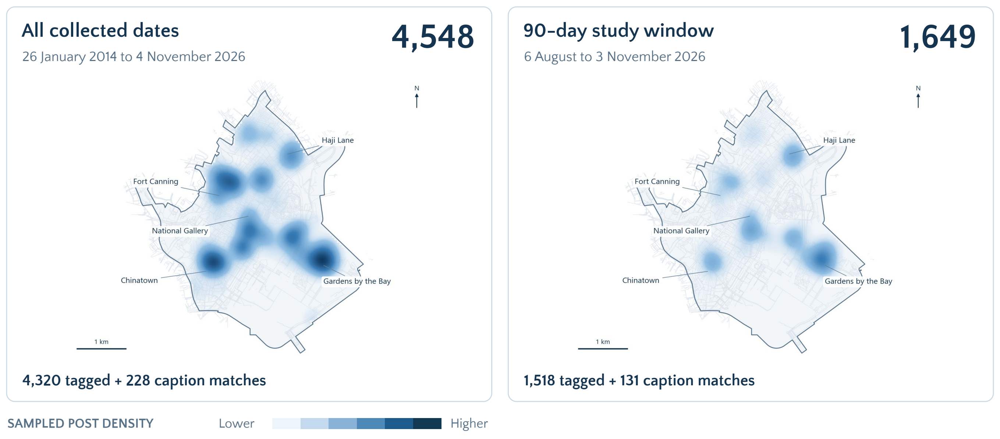
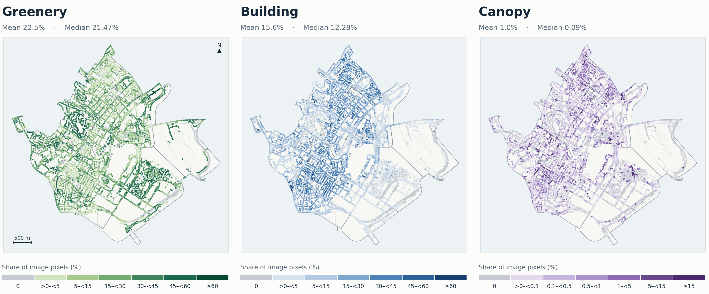
Map data and imagery credits: OpenStreetMap contributors (ODbL), LTA DataMall, data.gov.sg, SLA, STB, NParks, Google Street View, ESA WorldCover 2021 and Meta/WRI canopy height. Instagram counts are derived from the project's Apify collection snapshot.